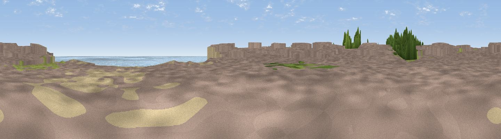

Oasis Tower
#45239 in England · top 73% of its area beats it · near Great YarmouthThe view, rendered

A 360° render of this exact spot computed from the terrain model, tree cover and land cover — summer colours, afternoon light, calibrated against photographs of famous viewpoints. Real trees, hedges and buildings will differ in detail.
The panorama
Grey silhouette: terrain skyline in each direction (720 bearings, Earth curvature and refraction included). Dashed green: skyline with trees (+15 m) and buildings (+8 m) as obstacles. Blue strip: how far the ground is visible on each bearing.
Where the view opens
Wedge length = distance to the farthest visible ground on that bearing (vegetation-aware). Rings at 10, 25 and 50 km.
What fills the view
50% built-up · 32% water · 9% grassland · 5% bare ground · 2% woodland · 1% cropland
Angular shares of the visible panorama (visual magnitude), not map area. Landscape diversity 0.52 (0–1 Shannon).
Key numbers
More beautiful places nearby
The staircase of upgrades: each row has a higher view potential than everything closer. Driving times are estimates from straight-line distance, calibrated against real road routing — check an actual route before setting out.
| Place | Direction | Drive | Score |
|---|---|---|---|
| Viewpoint near Great Yarmouth | N · 1 km | ~3 min | 33.4 |
| Strumpshaw Hill | W · 18 km | ~31 min | 34.5 |
| Telescope | S · 31 km | ~48 min | 35.0 |
| Gun Hill | S · 32 km | ~49 min | 46.7 |
| Viewpoint near Paston | NNW · 35 km | ~53 min | 56.1 |
| Viewpoint near Mundesley | NNW · 36 km | ~54 min | 58.9 |
| Viewpoint near Trimingham | NW · 39 km | ~58 min | 62.4 |
| Viewpoint near Sidestrand | NW · 42 km | ~62 min | 65.3 |
52.60450, 1.73615 · source: osm viewpoint · position refined by local search. Computed location — check access rights before visiting.